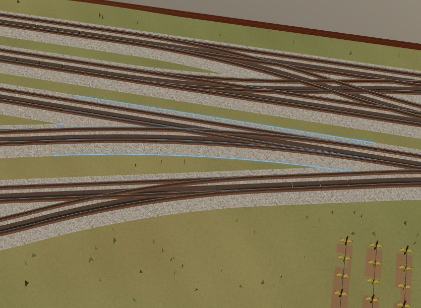
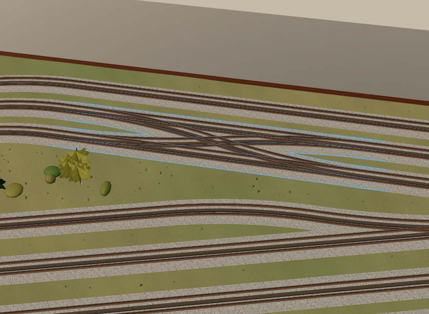
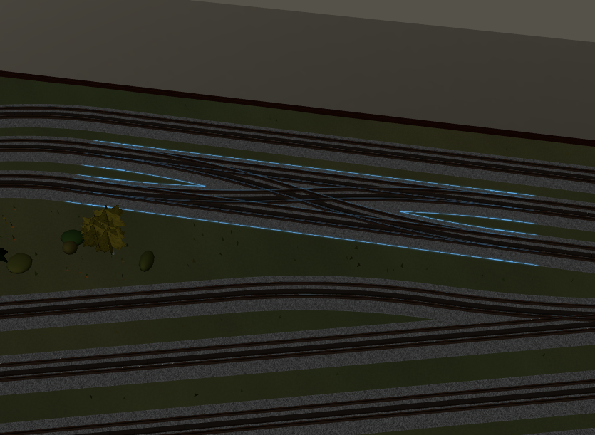
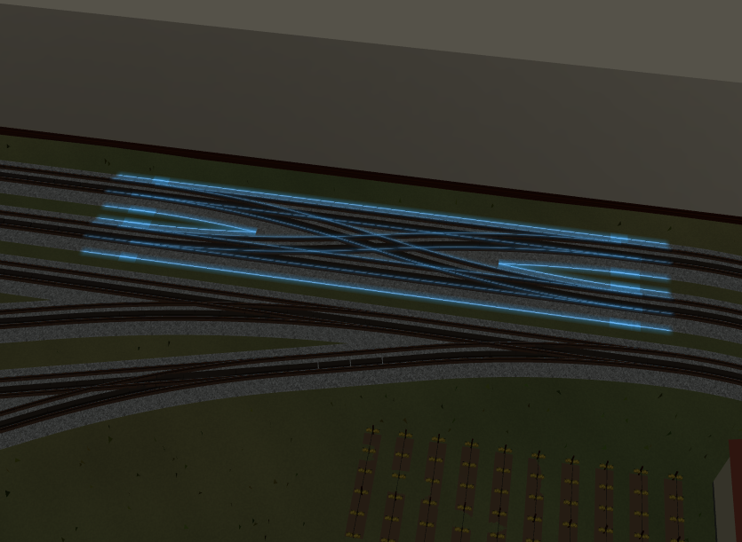

SerieN S3 — confronto glow blu
A: contorno sottile. B: diffusione locale più morbida. Approvazione estetica in attesa; S4 non iniziata.
Immagini WebGL autentiche, stessa camera e luce. Apri ogni immagine per il dettaglio originale. Versione Markdown · Rapporto
Y-IN semplice — giorno
Senza glow A · Precision Outline
A · Precision Outline
B · Soft Conformal Glow
WX-A — giorno
Senza glow A · Precision Outline
A · Precision Outline
B · Soft Conformal Glow
WX-A — notte
Senza glow A · Precision Outline
A · Precision Outline
B · Soft Conformal Glow
WX-B — notte
Senza glow A · Precision OutlineB · Soft Conformal Glow
A · Precision OutlineB · Soft Conformal Glow
Pulsazione A · periodo 1400 ms
200 ms700 ms 1100 ms
1100 ms Pulsazione B · periodo 1400 ms